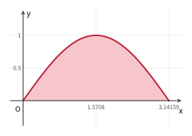

例題 7積分法 sin ax の回転体の体積
曲線 \(y=\sin x\ \left(0\leqq x\leqq\pi\right)\) と \(x\) 軸で囲まれた図形を \(x\) 軸のまわりに1回転してできる立体の体積を求めよ。
解き方（まず考え方）
\(V=\pi\int y^2dx\)。\(\sin^2\theta=\dfrac{1-\cos2\theta}{2}\) で次数を下げて積分する。
コツ薄い円板を積み重ねた体積。
解答
STEP 1 体積の公式
\(x\) 軸のまわりの回転体は、断面が半径 \(y\) の円板。
\[V=\pi\int_0^{\pi}y^2dx=\pi\int_0^{\pi}\sin^2x\,dx\]
STEP 2 半角の公式で次数を下げる
\(\sin^2\theta=\dfrac{1-\cos2\theta}{2}\) で \(\theta=x\) とする。
\[\sin^2x=\dfrac{1-\cos 2x}{2}\]\[V=\pi\int_0^{\pi}\dfrac{1-\cos 2x}{2}dx=\dfrac\pi2\int_0^{\pi}(1-\cos 2x)\,dx\]STEP 3 原始関数を求める
\(\int1\,dx=x\)、\(\int\cos 2x\,dx=\dfrac{\sin 2x}{2}\)（\((\sin 2x)'=2\cos 2x\) だから）。
\[\dfrac\pi2\left[x-\dfrac{\sin 2x}{2}\right]_0^{\pi}\]STEP 4 端の値を代入する
\(\sin2\pi=0\)、\(\sin0=0\)。
\[\left[x-\dfrac{\sin 2x}{2}\right]_0^{\pi}=\left(\pi-\dfrac{\sin2\pi}{2}\right)-\left(0-\dfrac{\sin0}{2}\right)=\pi\]STEP 5 計算する
\[V=\dfrac\pi2\cdot\pi=\dfrac{\pi^{2}}{2}\]
【答案（テストに書く形）】
\[\dfrac{\pi^{2}}{2}\]答
練習問題 7
- 曲線 \(y=\sin 2x\ \left(0\leqq x\leqq\dfrac\pi{2}\right)\) と \(x\) 軸で囲まれた図形を \(x\) 軸のまわりに1回転してできる立体の体積を求めよ。
- 曲線 \(y=\sin 3x\ \left(0\leqq x\leqq\dfrac\pi{3}\right)\) と \(x\) 軸で囲まれた図形を \(x\) 軸のまわりに1回転してできる立体の体積を求めよ。
- 曲線 \(y=\sin 4x\ \left(0\leqq x\leqq\dfrac\pi{4}\right)\) と \(x\) 軸で囲まれた図形を \(x\) 軸のまわりに1回転してできる立体の体積を求めよ。